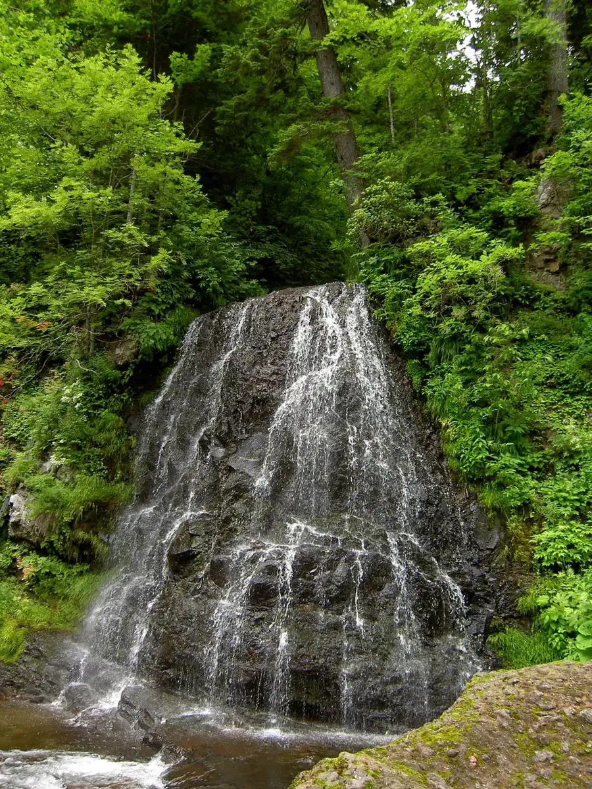
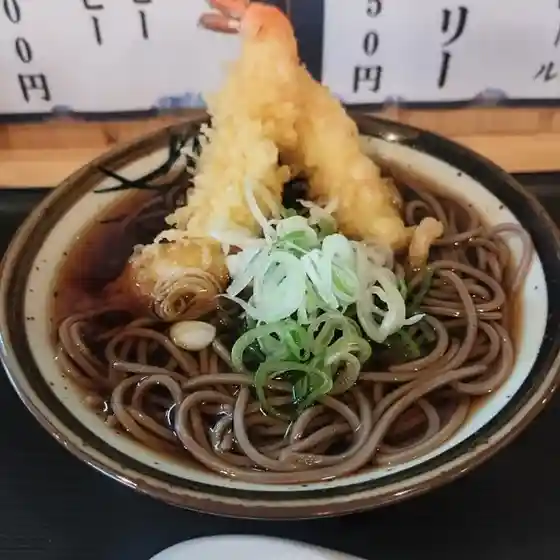
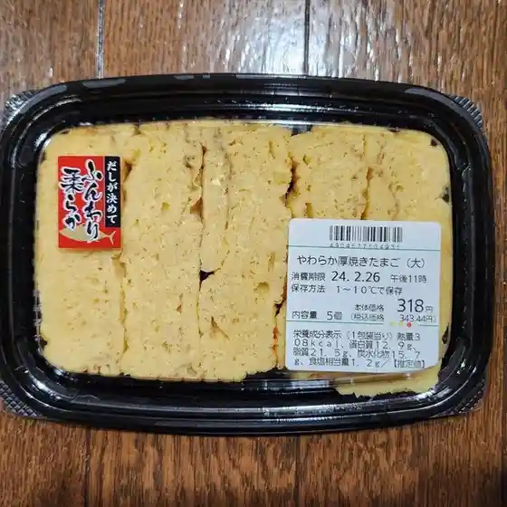
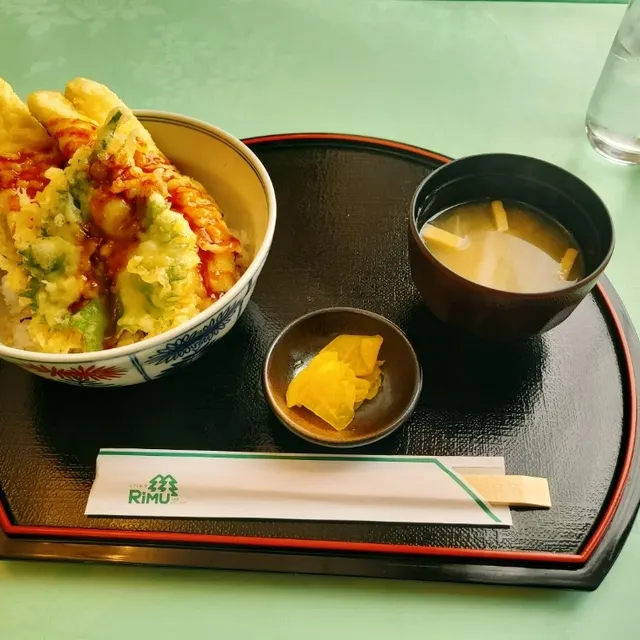
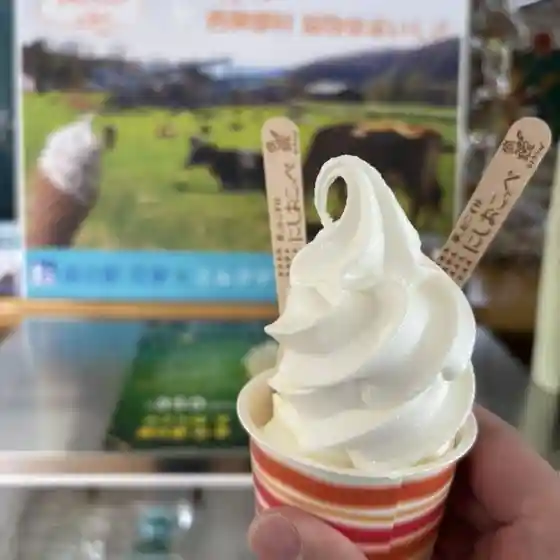
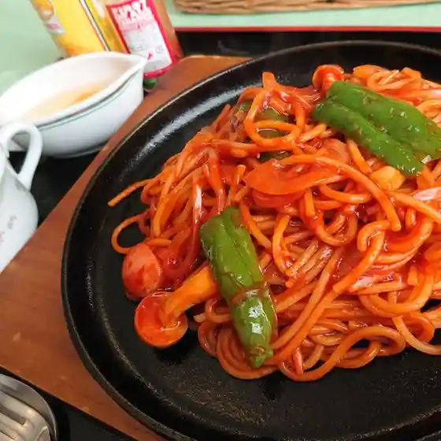
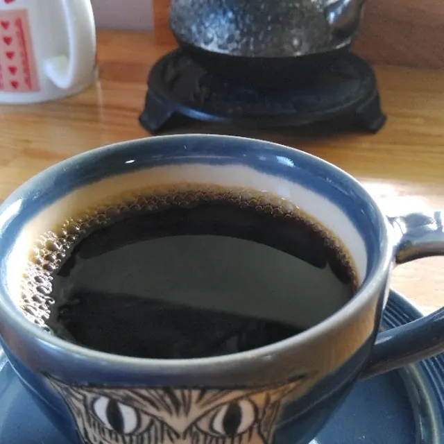
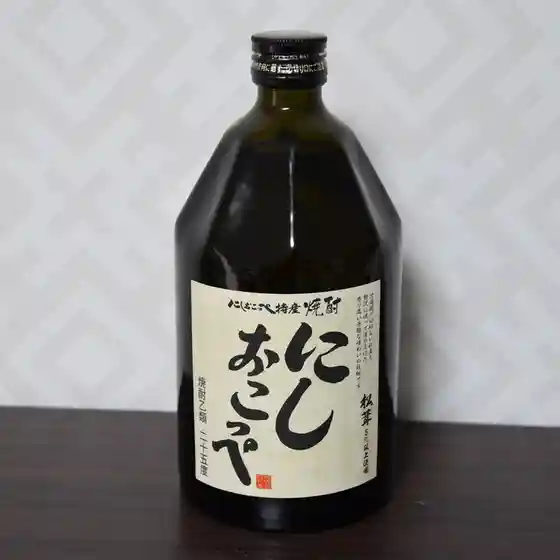
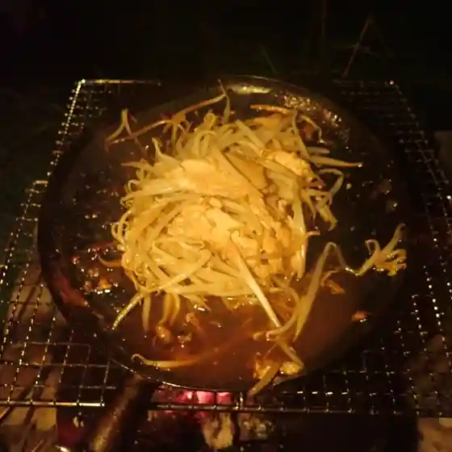

Japan / Hokkaido / Nishiokoppe
Nishiokoppe
Nishiokoppe · Hokkaido
Nishiokoppe
Highlighted on the Hokkaido map.

Stay
ホテル森夢（リム）
Hoteru Mori Yume ( Rimu )
Dining
お食事処 くう楽

O Shokuji Tokoro Kuu Raku
Qマート 西興部店

Q Maato Nishiokoppe Mise
ホテル森夢

Hoteru Mori Yume
道の駅 にしおこっぺ花夢

Michi No Eki Nishiokoppe Hanayume
レストラン グリーンリーフ

Resutoran Guriinriifu
cafe ぐらん･ち

Cafe Guran Guran Chi
マイショップ 田尾

Maishoppu Tao
セイコーマート 西興部店

Seikoomaato Nishiokoppe Mise